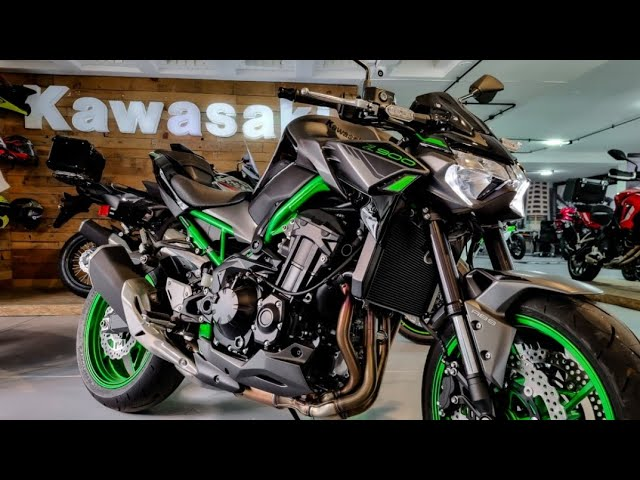
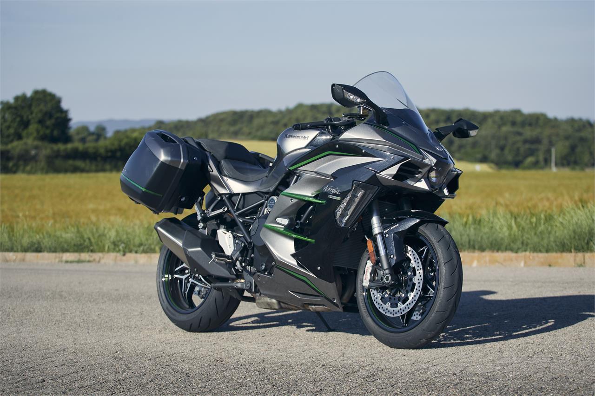

Kawasaki Z900
La Z900 combina estilo naked con un rendimiento brutal. Perfecta para los amantes de las motos de alto rendimiento y aspecto agresivo.
Colores disponibles
Negro, Gris, Verde Metálico
Modificaciones Populares
- Faros LED mejorados
- Manillar personalizado
- Frenos Brembo

Kawasaki Ninja H2
Conocida por su impresionante potencia sobrealimentada, la Ninja H2 es pura adrenalina y tecnología de vanguardia.
Colores disponibles
Negro, Plata, Verde Cromo
Modificaciones Populares
- Turbocompresor de alto rendimiento
- Escape Yoshimura
- Alerones de carbono